An Introduction to Neural Networks and Deep Learning#
Quick Links
A visual introduction: https://www.youtube.com/watch?v=UOvPeC8WOt8
But what is a neural network? | Chapter 1, Deep learning: https://www.youtube.com/watch?v=aircAruvnKk
Neural netoworks full playlist: https://www.youtube.com/watch?v=aircAruvnKk&list=PLZHQObOWTQDNU6R1_67000Dx_ZCJB-3pi
Visualization of a fully connected neural network, version 1: https://www.youtube.com/watch?v=Tsvxx-GGlTg
Watching Neural Networks Learn: https://www.youtube.com/watch?v=TkwXa7Cvfr8
Neural network Visualization: http://alexlenail.me/NN-SVG/index.html
Historical Overview: The Rise of Neural Networks#
1940s–1950s: Birth of the Perceptron#
1943: McCulloch & Pitts propose a computational model of neurons.
1958: Frank Rosenblatt introduces the Perceptron — a single-layer neural network.
Could classify linearly separable data.
Limited by the XOR problem (Minsky & Papert, 1969).
“The Perceptron is the first machine learning model capable of learning from data.”
1980s–1990s: Backpropagation and the First Wave#
1986: Rumelhart, Hinton & Williams publish backpropagation algorithm — enabling training of multi-layer networks.
1989: LeCun et al. apply CNNs to handwritten digit recognition (MNIST precursor).
Limitations: Lack of data, weak compute power → Neural networks fall out of favor.
2000s–2010s: The Deep Learning Revolution#
2006: Hinton et al. introduce deep belief networks and the term “Deep Learning”.
2012: AlexNet (Krizhevsky, Sutskever, Hinton) wins ImageNet with CNN + ReLU + Dropout → Deep Learning boom.
2014: GANs (Goodfellow), Seq2Seq, attention mechanisms.
2017: Transformer architecture (Vaswani et al.) — basis for modern LLMs.
2020s: Scaling laws, vision transformers (ViT), multimodal models (CLIP, DALL·E), LLMs (GPT, Gemini).
Key Enablers: GPU acceleration, Big Data (ImageNet), open-source frameworks (TensorFlow, PyTorch)
Timeline Summary#
{kind=link}
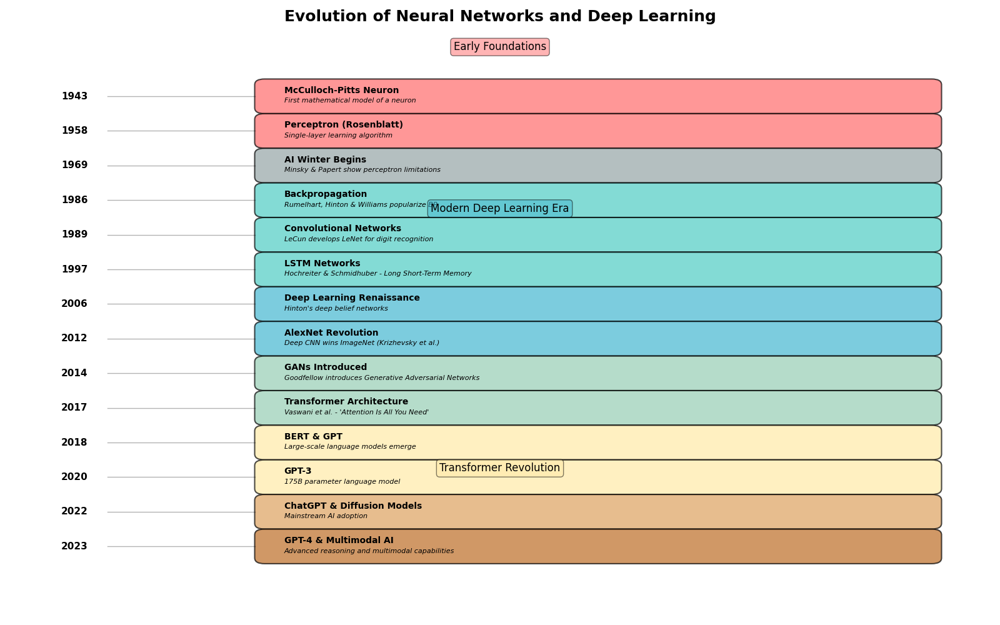
Neural Networks: Structure#
What is a (Deep) Neural Network?#
A function composed of layers of interconnected neurons: From https://alexlenail.me/NN-SVG/
{kind=link}
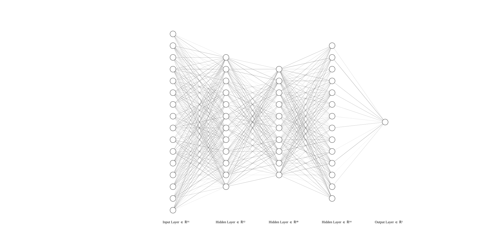
Neuron local computation#
{kind=link}
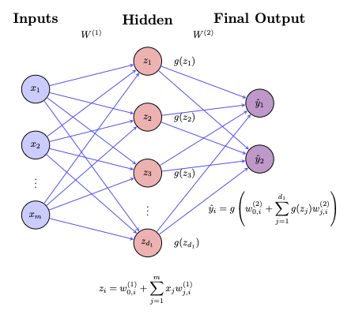
Each neuron computes:
Where:
\(w\): weights connecting to neuron \(i\) from layer \((l-1)\).
\(b\): bias
\(\sigma\): activation function (e.g., ReLU, Sigmoid)
{kind=link}
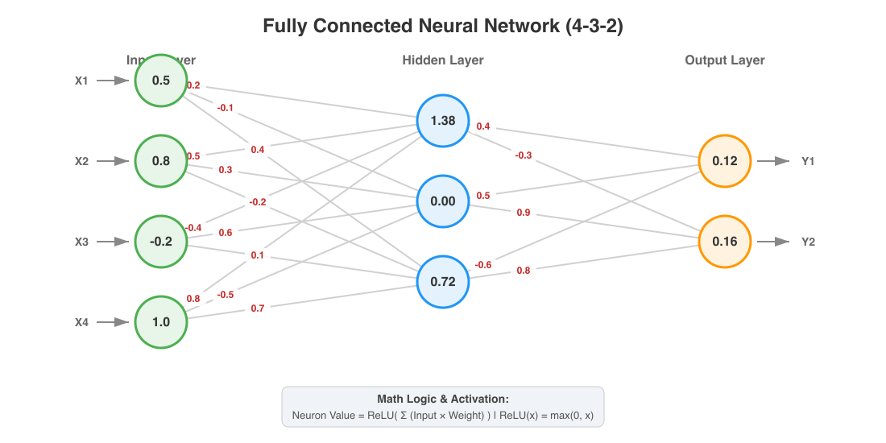
Common Activation Functions#
The most common activation functions are Sigmoid, Tanh, and ReLU (Rectified Linear Unit). ReLU is the most popular choice for hidden layers in deep learning today because it helps mitigate a problem called the “vanishing gradient.”, where the constant small gradients multiplications lead to small corrections in the weights learning process.
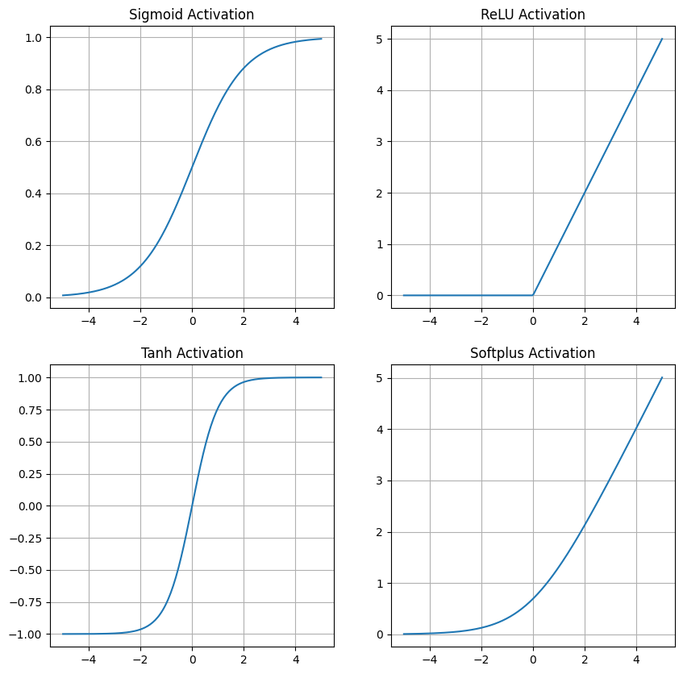
Tip
Weights visualization Please check: https://developers.google.com/machine-learning/crash-course/neural-networks/interactive-exercises
How networks learn: Backpropagation#
How does the network learn the correct values for its weights and biases?
It first makes a prediction using forward propagation.
It measures how wrong that prediction is using a loss function (e.g., Mean Squared Error or Cross-Entropy).
It calculates the gradient of the loss with respect to every weight and bias in the network. This is done efficiently via an algorithm called backpropagation, which is essentially an application of the chain rule from calculus.
It uses an optimizer (like Gradient Descent, Adam, Ada Delta, Adagrad, RMSProp, Muon optimizer) to update the weights and biases in the direction that minimizes the loss.
Tip
Visualize the feed-forward and back propagation dynamics https://8gwifi.org/ml/nn-viz.jsp
This cycle is repeated many times with the training data. The core of backpropagation is figuring out how much each parameter contributed to the error, and propagating this error information “backward” from the output layer to the input layer.
But this implies a nested chain rule applied across the network: therefore automatic differentiation is needed.
Sometimes computing the full gradient is not fesible. And maybe a little bit of noise is needed. For that reason, algorithms like the stochastic gradient descent are needed.
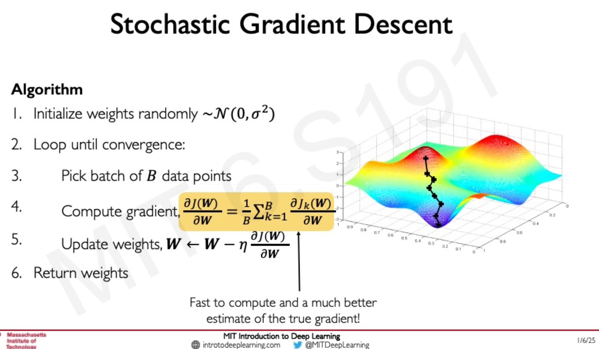
Visualization#
Exercise 11 (Relu and linear activation)
Why is the derivative of the activation function (\(g'\)) important in the backpropagation equation above? What would happen if we used a linear activation function (where \(g'(z)\) is just a constant) in all hidden layers?
How complex is the loss landscape?#
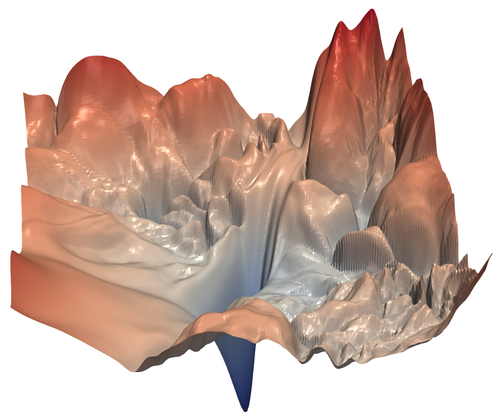
Fig. 9 Visualizing the loss landscape of Neural nets, 2017, hao Li et. al. https://arxiv.org/abs/1712.09913 , tomgoldstein/loss-landscape#
Some visualizations:#
https://www.telesens.co/loss-landscape-viz/viewer.html, from https://www.cs.umd.edu/~tomg/projects/landscapes/
Double descent
A simple example: A perceptron#
here we will implement a neural network from zero.
Based on https://www.youtube.com/watch?v=kft1AJ9WVDk
This is what we want to train our neural network with:
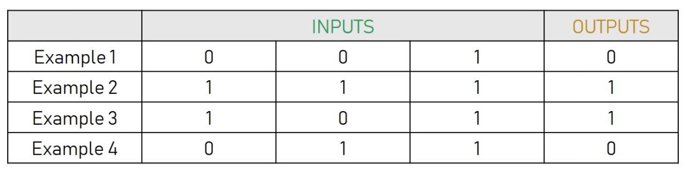
And we want to predict the new output (try to guess the rule)
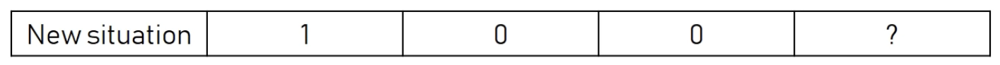
This is the neural network that we are going to use (you can also use http://alexlenail.me/NN-SVG/index.html)
To understand better the training, let’s show explicitly the weights
{kind=link}
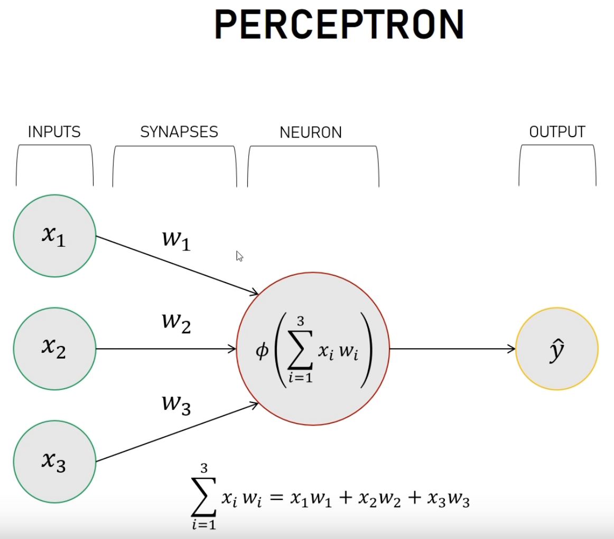
Here \(\phi\) is called the activation function, and there are several proposals to it. We will use a sigmoid function $\( f(x) = \dfrac{1}{1+\exp(-x)}, \)\( where \)x = \sum x_i w_i$.
Basic Implementation#
For this very basic nn, we will:
set the input or start of the algorithm:
Random weights \(w_i\)
Set the training inputs and outputs
Create an iteration function to perform the training for
nsteps(initially 1)
The we just iterate once and check what happens
import numpy as np
def sigmoid(x) :
return 1.0/(1 + np.exp(-x))
def get_training_inputs():
return np.array([[0, 0, 1],
[1, 1, 1],
[1, 0, 1],
[0, 1, 1]])
def get_training_outputs():
return np.array([0, 1, 1, 0]).reshape(4, 1)
def get_init_weights():
"""
Initially, simply return random weights in [-1, 1)
"""
# YOUR CODE HERE
pass
def training_one_step(training_inputs, training_outputs, initial_weights):
# Forward pass
# iter only once
# YOUR CODE HERE
pass
Cell In[2], line 27
pass
^
IndentationError: expected an indented block after function definition on line 23
np.random.seed(1) # what happens if you comment this?
inputs_t = get_training_inputs()
outputs_t = get_training_outputs()
weights = get_init_weights()
print(inputs_t)
print(outputs_t)
print(weights)
outputs = training_one_step(inputs_t, outputs_t, weights)
print("Training outputs:")
print(outputs_t)
print("Results after one step training:")
print(outputs)
Improving the training: Learning with backpropagation#
These results are not optimal, and depend a lot on the initial weights. Also, we are not yet comparing with the expecting output for the training data. We are now going to include it and add correction terms to the weights, so we will be using back-propagation. Our algorithm is now:
Take each input from the training data.
Compute the error, i.e. the difference between the output and the expected one,
output - expectedoutput, \(\Delta = \hat y - y\).According to the error, adjust the weights
Repeat this many times, hopefully getting convergence , and also being able to apply our nn to new cases not used already.
But how to adjust the weights? There are several techniques based on the actual error \(\Delta\).
First, we will define a cost/loss function as the typical MSE
where \(\hat y\) is the predicted value and \(y\) is the expected one. Notice that we are not adding up because we only have one output.
Second, we will apply gradient descent approximation to our problem, in order to improve our coefficients for our data. This means that we will propagate back the errors into the coefficients!
where \(\alpha\) is the learning rate. Taking into account that
and
then, by using the chain rule, we have
def sigmoid_prime(x):
return sigmoid(x)*(1-sigmoid(x))
def train_nn(training_inputs, training_outputs, initial_weights, niter, errors_data, alpha = 1.0):
"""
training_inputs: asdasdasda
...
errors_data: output - stores the errors per iteration
"""
w = initial_weights
for ii in range(niter):
# Forward propagation
# YOUR CODE HERE
pass
# Backward propagation
# YOUR CODE HERE
pass
w = w - alpha*deltaw
# Save errors for plotting later
errors_data[ii] = errors.reshape((4,))
return outputs, w
np.random.seed(1) # what happens if you comment this?
inputs_t = get_training_inputs()
outputs_t = get_training_outputs()
weights = get_init_weights()
NITER = 5000
errors = np.zeros((NITER, 4))
outputs, weights = train_nn(inputs_t, outputs_t, weights, NITER, errors, alpha=0.9)
print("Training outputs:")
print(outputs_t)
print("Results after training:")
print(outputs)
print(weights)
fig, ax = plt.subplots(1, 2, figsize=(20, 5))
ax[0].plot(range(NITER), errors)
ax[0].set_xlabel("Epoch")
ax[0].set_ylabel("Errors")
ax[1].loglog(range(NITER), np.abs(errors))
ax[1].set_xlabel("Epoch")
It seems that our network is very well trained, But how does it perform with a new input? let’s check with [1, 0, 0]
#print(weights)
#print(weights.shape)
input_new = np.array([1, 0, 0]).reshape(3, 1)
#print(input_new)
#print(input_new.shape)
#print(np.sum(weights*input_new))
print(sigmoid(np.sum(weights*input_new)))
A typical simple example in pytorch#
The Core of Deep Learning: Deep Neural Networks#
https://medium.com/data-science/the-mostly-complete-chart-of-neural-networks-explained-3fb6f2367464
The process of passing input data through the network to get an output is called forward propagation. For each neuron, we calculate a weighted sum of the outputs from the previous layer, add a bias, and then pass this result through a non-linear activation function.

Compute requirements:#
For dense (fully connected) layer: cost is O(nin×nout) multiplies per sample.
For convolutional layer: cost depends on kernel size, input channels, output channels and spatial size — often more efficient than dense for images due to weight sharing.
Memory: store activations for backward pass (unless using checkpointing).
Training scales with dataset size, model size and number of epochs; GPUs / TPUs accelerate matrix ops.

Some simple examples using more robust libraries#
Data generation#
# Data generation
import numpy as np
# 1. Generate X data (input/features)
# Create 1000 evenly spaced points from 0 to 2*pi
X = np.linspace(0, 2 * np.pi, 1000).astype(np.float32)
# Reshape X to be a column vector (1000 samples, 1 feature)
# PyTorch/NN models typically expect a 2D input array (samples, features)
X = X.reshape(-1, 1)
# 2. Generate y data (output/labels)
# Base sine function
y_base = np.sin(X) - 0.1*X
# Add noise (e.g., normal distribution noise)
noise = np.random.normal(loc=0.0, scale=0.1, size=X.shape).astype(np.float32)
# Final noisy y data
y = y_base + noise
Sklearn#
import numpy as np
from sklearn.neural_network import MLPRegressor
# Ensure X is a numpy array and 2D (sklearn requires shape: (n_samples, n_features))
X_sklearn = np.asarray(X).reshape(-1, 1) if np.asarray(X).ndim == 1 else np.asarray(X)
y_sklearn = np.asarray(y).ravel()
# NOTE: Do we need scaling?
# Equivalent sklearn model
model_sklearn = MLPRegressor(
hidden_layer_sizes=(20,), # 1 hidden layer with 20 neurons
activation='tanh', # Tanh activation
solver='adam', # Adam optimizer
learning_rate_init=0.1, # Initial learning rate
max_iter=1000, # 1000 epochs
batch_size=len(X_sklearn), # Matches PyTorch's full-batch training
random_state=42, # For reproducibility
verbose=False # Optional: print training progress per epoch
)
# Train
model_sklearn.fit(X_sklearn, y_sklearn)
# Get predictions and compute MSE (equivalent to PyTorch's loss_fn)
y_pred_sklearn = model_sklearn.predict(X_sklearn)
final_loss_sklearn = np.mean((y_pred_sklearn - y_sklearn) ** 2)
print("Final loss (MSE):", final_loss_sklearn)
import matplotlib.pyplot as plt
import numpy as np
# Prepare data for plotting (sort X so the prediction line connects in order)
X_flat = np.asarray(X).ravel()
sorted_idx = np.argsort(X_flat)
X_sorted = X_flat[sorted_idx]
# Get predictions on sorted data
# For sklearn:
y_pred_sorted = model_sklearn.predict(X_sorted.reshape(-1, 1))
# Plot data vs predictions
plt.figure(figsize=(8, 6))
plt.scatter(X_flat, y, color='blue', label='Original Data', alpha=0.7, edgecolors='w', s=60)
plt.plot(X_sorted, y_pred_sorted, color='red', linewidth=2.5, label='Model Predictions')
plt.xlabel('X', fontsize=12)
plt.ylabel('y', fontsize=12)
plt.title('Original Data vs Model Predictions', fontsize=14, fontweight='bold')
plt.legend(fontsize=11)
plt.grid(True, linestyle='--', alpha=0.5)
plt.tight_layout()
plt.show()
pytorch#
!uv pip install torch
import torch
import torch.nn as nn
import torch.optim as optim
device = torch.device("cuda" if torch.cuda.is_available() else "cpu")
print("Using device:", device)
# Toy dataset
X_torch = torch.tensor(X, dtype=torch.float32).to(device)
y_torch = torch.tensor(y, dtype=torch.float32).to(device)
# Model
model = nn.Sequential(
nn.Linear(1, 20), # linear combination from one input to 20 neurons
nn.Tanh(), # Activation function per neuron
nn.Linear(20, 1) #
).to(device)
loss_fn = nn.MSELoss()
optimizer = optim.Adam(model.parameters(), lr=0.1) # Is lr useful?
for epoch in range(1000):
optimizer.zero_grad()
y_pred = model(X_torch)
loss = loss_fn(y_pred, y_torch)
loss.backward()
optimizer.step()
print("Final loss:", loss.item())
Exercise 12
Play with hyperparameters
Tensorflow#
!uv pip install tensorflow # WARNING: Might consume a lot of storage
# Please implement it. If possible, use the gpu
import tensorflow as tf
import numpy as np
import matplotlib.pyplot as plt
# 1. Prepare data (ensure 2D shape: (n_samples, n_features))
X_tf = np.asarray(X).reshape(-1, 1)
y_tf = np.asarray(y).reshape(-1, 1)
# 2. Set seed for reproducibility (TF/Keras is more sensitive to init)
tf.random.set_seed(42)
np.random.seed(42)
# 3. Define model
model = tf.keras.Sequential([
tf.keras.layers.Dense(20, input_shape=(1,), activation='tanh'),
tf.keras.layers.Dense(1) # No activation on output (regression)
])
# 4. Compile
model.compile(
optimizer=tf.keras.optimizers.Adam(learning_rate=0.1),
loss='mse'
)
# 5. Train & capture history
print("Training...")
history = model.fit(
X_tf, y_tf,
epochs=1000,
verbose=0,
batch_size=len(X_tf) # Full-batch to match PyTorch exactly
)
# 6. Get predictions
y_pred = model.predict(X_tf, verbose=0)
# 7. Plot: Data vs Predictions
plt.figure(figsize=(8, 6))
plt.scatter(X_tf, y_tf, color='blue', label='Original Data', alpha=0.7, edgecolors='w', s=60)
plt.plot(X_tf.ravel(), y_pred.ravel(), color='red', linewidth=2.5, label='Model Predictions')
plt.xlabel('X', fontsize=12)
plt.ylabel('y', fontsize=12)
plt.title('Original Data vs Model Predictions', fontsize=14, fontweight='bold')
plt.legend(fontsize=11)
plt.grid(True, linestyle='--', alpha=0.5)
plt.tight_layout()
plt.show()
# 8. Plot: Training Loss Curve
plt.figure(figsize=(8, 5))
plt.plot(history.history['loss'], 'b-', linewidth=2)
plt.xlabel('Epoch', fontsize=12)
plt.ylabel('MSE Loss', fontsize=12)
plt.title('Training Loss Curve', fontsize=14, fontweight='bold')
plt.grid(True, linestyle='--', alpha=0.5)
plt.tight_layout()
plt.show()
Why is the tensorflow curve a little bit off? what hyperparameter to fix?
Deep learning : some arquitectures#
See: https://mriquestions.com/deep-network-types.html
Convolutional Neural Networks (CNNs)#

Check it step-by-step at https://www.youtube.com/watch?v=jDe5BAsT2-Y
Pooling explanation.
This is a nice cnn visualization for the mist digits: https://adamharley.com/nn_vis/cnn/3d.html
{kind=link}
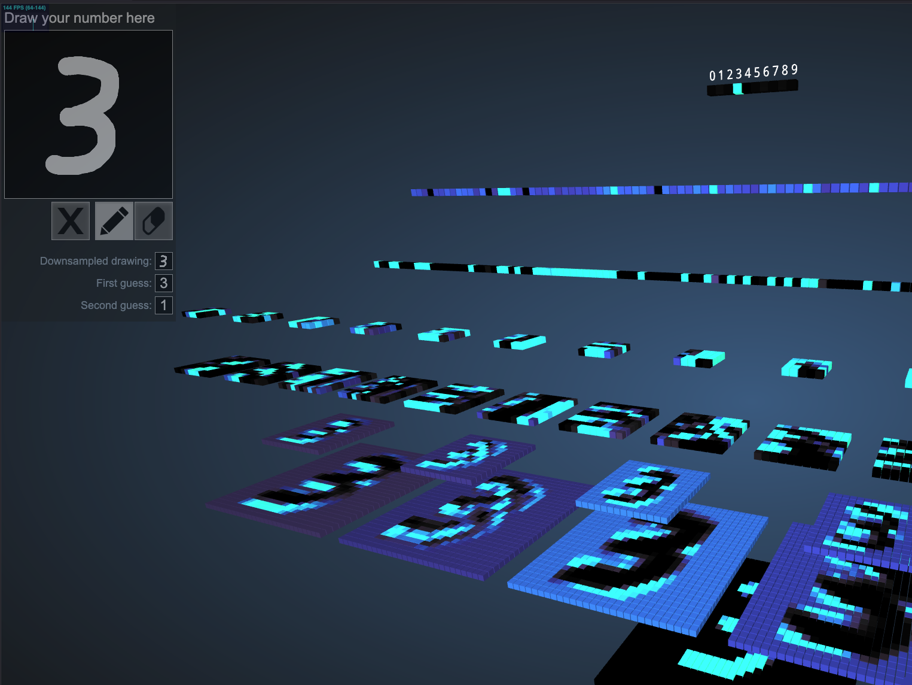
Encoder-Decoder Networks#

Generative Adversarial Networks (GANs)#

Recurrent Neural Networks (RNNs)#

For sequential or time-series data, making them useful for tasks requiring memory of past inputs, such as natural language processing (NLP), speech recognition, machine translation, and time-series forecasting
Transformer Neural Networks (TNNs)#

Used in NLP, Vision, Multimodal models. https://en.wikipedia.org/wiki/Transformer_(deep_learning_architecture)?useskin=vector

Hands-On: Classifying MNIST Digits#
We’ll classify handwritten digits (28x28 grayscale) using 4 frameworks.
Dataset: MNIST (70,000 images, 10 classes)
Feature |
Scikit-learn |
PyTorch |
Keras |
TensorFlow |
|---|---|---|---|---|
Ease of Use |
Easy |
Moderate |
Very Easy |
Moderate |
Flexibility |
Low |
Very High |
High |
High |
GPU Support |
No |
Yes |
Yes |
Yes |
Debugging |
Easy |
Very Easy |
Moderate |
Difficult |
Production Ready |
Yes (small models) |
Yes |
Yes |
Excellent |
Best For |
Quick ML baseline |
Research, custom models |
Prototyping |
Industry-scale apps |
Learning Curve |
Low |
Steep |
Moderate |
Steep |
Scikit-learn (MLPClassifier)#
Simple, fast, but no GPU use — limited to shallow nets.
from sklearn.datasets import fetch_openml
from sklearn.neural_network import MLPClassifier
from sklearn.preprocessing import StandardScaler
from sklearn.metrics import accuracy_score
# Load data
mnist = fetch_openml('mnist_784', version=1)
X, y = mnist.data / 255.0, mnist.target.astype(int)
# Train-test split
from sklearn.model_selection import train_test_split
X_train, X_test, y_train, y_test = train_test_split(X, y, test_size=0.2, random_state=42)
# Scale features
scaler = StandardScaler()
X_train = scaler.fit_transform(X_train)
X_test = scaler.transform(X_test)
# Train MLP
mlp = MLPClassifier(hidden_layer_sizes=(128, 64), max_iter=10, random_state=42, verbose=True)
mlp.fit(X_train, y_train)
# Predict
y_pred = mlp.predict(X_test)
print(f"Scikit-learn Accuracy: {accuracy_score(y_test, y_pred):.4f}")
PyTorch (Custom NN)#
Full control, GPU-ready, great for learning.
import torch
import torch.nn as nn
import torch.optim as optim
from torchvision import datasets, transforms
# Transform and load data
transform = transforms.Compose([transforms.ToTensor(), transforms.Normalize((0.1307,), (0.3081,))])
train_dataset = datasets.MNIST(root='./data', train=True, download=True, transform=transform)
test_dataset = datasets.MNIST(root='./data', train=False, download=True, transform=transform)
train_loader = torch.utils.data.DataLoader(train_dataset, batch_size=64, shuffle=True)
test_loader = torch.utils.data.DataLoader(test_dataset, batch_size=1000)
# Define model
class SimpleNN(nn.Module):
def __init__(self):
super(SimpleNN, self).__init__()
self.fc1 = nn.Linear(28*28, 128)
self.fc2 = nn.Linear(128, 64)
self.fc3 = nn.Linear(64, 10)
self.relu = nn.ReLU()
def forward(self, x):
x = x.view(-1, 28*28) # flatten
x = self.relu(self.fc1(x))
x = self.relu(self.fc2(x))
x = self.fc3(x)
return x
model = SimpleNN()
criterion = nn.CrossEntropyLoss()
optimizer = optim.Adam(model.parameters(), lr=0.001)
# Training loop
for epoch in range(10):
for data, target in train_loader:
optimizer.zero_grad()
output = model(data)
loss = criterion(output, target)
loss.backward()
optimizer.step()
# Evaluate
correct = 0
total = 0
with torch.no_grad():
for data, target in test_loader:
output = model(data)
_, predicted = torch.max(output.data, 1)
total += target.size(0)
correct += (predicted == target).sum().item()
print(f"PyTorch Accuracy: {correct/total:.4f}")
!uv pip install torchvision
import torch
import torch.nn as nn
import torch.optim as optim
from torchvision import datasets, transforms
# Transform and load data
transform = transforms.Compose([transforms.ToTensor(), transforms.Normalize((0.1307,), (0.3081,))])
train_dataset = datasets.MNIST(root='./data', train=True, download=True, transform=transform)
test_dataset = datasets.MNIST(root='./data', train=False, download=True, transform=transform)
train_loader = torch.utils.data.DataLoader(train_dataset, batch_size=64, shuffle=True)
test_loader = torch.utils.data.DataLoader(test_dataset, batch_size=1000)
# Define model
class SimpleNN(nn.Module):
def __init__(self):
super(SimpleNN, self).__init__()
self.fc1 = nn.Linear(28*28, 128)
self.fc2 = nn.Linear(128, 64)
self.fc3 = nn.Linear(64, 10)
self.relu = nn.ReLU()
def forward(self, x):
x = x.view(-1, 28*28) # flatten
x = self.relu(self.fc1(x))
x = self.relu(self.fc2(x))
x = self.fc3(x)
return x
model = SimpleNN()
criterion = nn.CrossEntropyLoss()
optimizer = optim.Adam(model.parameters(), lr=0.001)
# Training loop
for epoch in range(10):
for data, target in train_loader:
optimizer.zero_grad()
output = model(data)
loss = criterion(output, target)
loss.backward()
optimizer.step()
# Evaluate
correct = 0
total = 0
with torch.no_grad():
for data, target in test_loader:
output = model(data)
_, predicted = torch.max(output.data, 1)
total += target.size(0)
correct += (predicted == target).sum().item()
print(f"PyTorch Accuracy: {correct/total:.4f}")
Keras (High-Level API)#
“Write less, do more.” — Ideal for prototyping.
from tensorflow.keras.models import Sequential
from tensorflow.keras.layers import Dense, Flatten
from tensorflow.keras.datasets import mnist
# Load data
(X_train, y_train), (X_test, y_test) = mnist.load_data()
X_train, X_test = X_train / 255.0, X_test / 255.0
# Build model
model = Sequential([
Flatten(input_shape=(28, 28)),
Dense(128, activation='relu'),
Dense(64, activation='relu'),
Dense(10, activation='softmax')
])
model.compile(optimizer='adam',
loss='sparse_categorical_crossentropy',
metrics=['accuracy'])
# Train
model.fit(X_train, y_train, epochs=5, validation_split=0.1)
# Evaluate
test_loss, test_acc = model.evaluate(X_test, y_test)
print(f"Keras Accuracy: {test_acc:.4f}")
TensorFlow (Low-Level)#
Full control over gradients — used in research.
import tensorflow as tf
# Load data (same as above)
(X_train, y_train), (X_test, y_test) = tf.keras.datasets.mnist.load_data()
X_train, X_test = tf.cast(X_train / 255.0, tf.float32), tf.cast(X_test / 255.0, tf.float32)
y_train, y_test = tf.cast(y_train, tf.int64), tf.cast(y_test, tf.int64)
# Define model using tf.keras.layers
model = tf.keras.Sequential([
tf.keras.layers.Flatten(input_shape=(28, 28)),
tf.keras.layers.Dense(128, activation='relu'),
tf.keras.layers.Dense(64, activation='relu'),
tf.keras.layers.Dense(10)
])
# Loss and optimizer
loss_fn = tf.keras.losses.SparseCategoricalCrossentropy(from_logits=True)
optimizer = tf.keras.optimizers.Adam()
# Training step
@tf.function
def train_step(x, y):
with tf.GradientTape() as tape:
predictions = model(x, training=True)
loss = loss_fn(y, predictions)
gradients = tape.gradient(loss, model.trainable_variables)
optimizer.apply_gradients(zip(gradients, model.trainable_variables))
return loss
# Training loop
for epoch in range(5):
for x_batch, y_batch in tf.data.Dataset.from_tensor_slices((X_train, y_train)).batch(64):
loss = train_step(x_batch, y_batch)
print(f"Epoch {epoch+1}, Loss: {loss:.4f}")
# Evaluate
test_acc = tf.keras.metrics.SparseCategoricalAccuracy()
for x_batch, y_batch in tf.data.Dataset.from_tensor_slices((X_test, y_test)).batch(1000):
logits = model(x_batch)
test_acc.update_state(y_batch, logits)
print(f"TensorFlow Accuracy: {test_acc.result():.4f}")
Exercises#
Fitting a planetary orbit#
Complete the following code to fit a planetary orbit.
How many training epochs do you need to get at least a “visually” close trajectory? use two hidden layers with 64 neurons each.
# Robust PyTorch example: learn orbital motion (positions) from initial state + time
import numpy as np
import torch
import torch.nn as nn
import torch.optim as optim
from torch.utils.data import TensorDataset, DataLoader, random_split
import matplotlib.pyplot as plt
torch.manual_seed(0)
np.random.seed(0)
# --- Physics simulator (two-body central force, simple explicit integrator)
G = 1.0
M = 1.0
def acceleration(x, y, eps=1e-8):
r2 = x**2 + y**2
r = np.sqrt(r2) + eps # add eps to avoid div by zero
r3 = r2 * r
ax = -G * M * x / r3
ay = -G * M * y / r3
return ax, ay
def simulate_orbit(x0, y0, vx0, vy0, dt=0.01, steps=400):
# simple symplectic-like Euler (semi-implicit) integrator for stability
x, y, vx, vy = x0, y0, vx0, vy0
traj = np.zeros((steps, 2), dtype=np.float32)
for i in range(steps):
ax, ay = acceleration(x, y)
vx = vx + ax * dt
vy = vy + ay * dt
x = x + vx * dt
y = y + vy * dt
traj[i, 0] = x
traj[i, 1] = y
return traj
# --- Build dataset: many trajectories with varied initial conditions
n_traj = 120 # number of different initial conditions
steps = 400 # time steps per trajectory
dt = 0.02
total_samples = n_traj * steps
Xs = np.zeros((total_samples, 5), dtype=np.float32) # x0,y0,vx0,vy0,t
Ys = np.zeros((total_samples, 2), dtype=np.float32) # x_t, y_t
ptr = 0
for i in range(n_traj):
# sample random initial radius around 0.7..1.5
r = np.random.uniform(0.7, 1.5)
theta = np.random.uniform(0, 2*np.pi)
x0 = r * np.cos(theta)
y0 = r * np.sin(theta)
# circular velocity magnitude
v_circ = np.sqrt(G*M / r)
# scale velocity around circular (0.6..1.4)
v_factor = np.random.uniform(0.6, 1.4)
v = v_circ * v_factor
# perpendicular velocity to radius for near-orbit initial conditions
vx0 = -v * np.sin(theta)
vy0 = v * np.cos(theta)
traj = simulate_orbit(x0, y0, vx0, vy0, dt=dt, steps=steps)
t = np.arange(1, steps+1) * dt # time relative to start (avoid t=0 exactly if you prefer)
for j in range(steps):
Xs[ptr, :] = np.array([x0, y0, vx0, vy0, t[j]], dtype=np.float32)
Ys[ptr, :] = traj[j]
ptr += 1
# quick sanity
print("Dataset shape X, Y:", Xs.shape, Ys.shape)
# --- Normalize inputs and outputs with epsilon guard for std
eps = 1e-8
X_mean = Xs.mean(axis=0)
X_std = Xs.std(axis=0)
X_std[X_std < eps] = 1.0 # guard against zero std
Y_mean = Ys.mean(axis=0)
Y_std = Ys.std(axis=0)
Y_std[Y_std < eps] = 1.0
Xn = (Xs - X_mean) / X_std
Yn = (Ys - Y_mean) / Y_std
# check for NaN/inf
assert not np.isnan(Xn).any(), "NaNs in normalized X"
assert not np.isnan(Yn).any(), "NaNs in normalized Y"
# --- Torch dataset and loaders
batch_size = 1024
dataset = TensorDataset(torch.from_numpy(Xn.astype(np.float32)), torch.from_numpy(Yn.astype(np.float32)))
n_val = int(0.1 * len(dataset))
n_train = len(dataset) - n_val
train_ds, val_ds = random_split(dataset, [n_train, n_val])
train_loader = DataLoader(train_ds, batch_size=batch_size, shuffle=True)
val_loader = DataLoader(val_ds, batch_size=batch_size)
NHIDDEN = 64
# --- Model
class OrbitNet(nn.Module):
def __init__(self):
super().__init__()
self.net = nn.Sequential(
nn.Linear(5, NHIDDEN),
nn.ReLU(),
nn.Linear(NHIDDEN, NHIDDEN),
nn.ReLU(),
nn.Linear(NHIDDEN, 2)
)
def forward(self, x):
return self.net(x)
device = torch.device("cuda" if torch.cuda.is_available() else "cpu")
model = OrbitNet().to(device)
opt = optim.Adam(model.parameters(), lr=1e-3)
loss_fn = nn.MSELoss()
# training with validation, gradient clipping and NaN guard
n_epochs = 280
for epoch in range(1, n_epochs+1):
model.train()
running = 0.0
for xb, yb in train_loader:
xb = xb.to(device)
yb = yb.to(device)
pred = model(xb)
loss = loss_fn(pred, yb)
opt.zero_grad()
loss.backward()
# gradient clipping to avoid occasional explosion
torch.nn.utils.clip_grad_norm_(model.parameters(), max_norm=1.0)
opt.step()
running += loss.item() * xb.shape[0]
train_loss = running / n_train
# validation step
model.eval()
val_running = 0.0
with torch.no_grad():
for xb, yb in val_loader:
xb, yb = xb.to(device), yb.to(device)
pred = model(xb)
val_running += loss_fn(pred, yb).item() * xb.shape[0]
val_loss = val_running / n_val
# guard: stop if NaN appears
if np.isnan(train_loss) or np.isnan(val_loss):
print(f"Epoch {epoch}: NaN detected, stopping.")
break
if epoch % 10 == 0 or epoch == 1:
print(f"Epoch {epoch:3d} train_loss={train_loss:.6e} val_loss={val_loss:.6e}")
# --- Evaluate on a fresh test trajectory (unseen initial cond)
theta = 0.3
r = 1.1
x0 = r * np.cos(theta); y0 = r * np.sin(theta)
v_circ = np.sqrt(G*M / r)
v = v_circ * 1.05
vx0 = -v * np.sin(theta); vy0 = v * np.cos(theta)
traj_true = simulate_orbit(x0, y0, vx0, vy0, dt=dt, steps=steps)
t = np.arange(1, steps+1) * dt
X_test = np.stack([np.full_like(t, x0), np.full_like(t, y0),
np.full_like(t, vx0), np.full_like(t, vy0),
t], axis=1).astype(np.float32)
X_test_n = (X_test - X_mean) / X_std
with torch.no_grad():
pred_n = model(torch.from_numpy(X_test_n).to(device).float()).cpu().numpy()
pred = pred_n * Y_std + Y_mean
# Plot true vs predicted trajectory
plt.figure(figsize=(6,6))
plt.plot(traj_true[:,0], traj_true[:,1], label='True', linewidth=2)
plt.plot(pred[:,0], pred[:,1], '--', label='NN predicted', linewidth=2)
plt.scatter([x0], [y0], color='k', marker='x', label='start')
plt.axis('equal')
plt.legend()
plt.title('Orbit: true vs NN prediction')
plt.xlabel('x')
plt.ylabel('y')
plt.show()
# Quantitative error
mse = np.mean((pred - traj_true)**2)
print("Test MSE (position):", mse)
Galaxy Morphology Classification#
Astronomers classify galaxies (spiral, elliptical, irregular) based on their shape. This classification provides clues about a galaxy’s formation, age, and evolutionary history.
The Task: Build a Convolutional Neural Network (CNN) to classify images of galaxies into different morphological types.
Dataset: A great starting point is the Galaxy Zoo 2 dataset, which has hundreds of thousands of galaxy images classified by citizen scientists.
Predicting Protein Subcellular Localization#
Knowing where a protein resides within a cell (e.g., nucleus, cytoplasm, mitochondria) is crucial for understanding its function. This is called subcellular localization.
The Task: Predict a protein’s location based on its amino acid sequence. This is a sequence classification problem.
Dataset: You can find datasets on platforms like the UCI Machine Learning Repository or by searching for “protein subcellular localization dataset.” The data consists of protein sequences (strings of letters like ‘ARND…’) and their corresponding location labels.
Predicting Quantum Mechanical Properties of Molecules#
Quantum chemistry calculations can predict molecular properties (like electronic energy) but are computationally very expensive. Machine learning can approximate these calculations much faster.
The Task: Build a model to predict a molecule’s properties based on its 3D structure. Molecules are naturally represented as graphs, where atoms are nodes and bonds are edges.
Dataset: The QM9 dataset is a standard benchmark. It contains about 134,000 small organic molecules with 13 different quantum properties calculated.